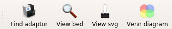
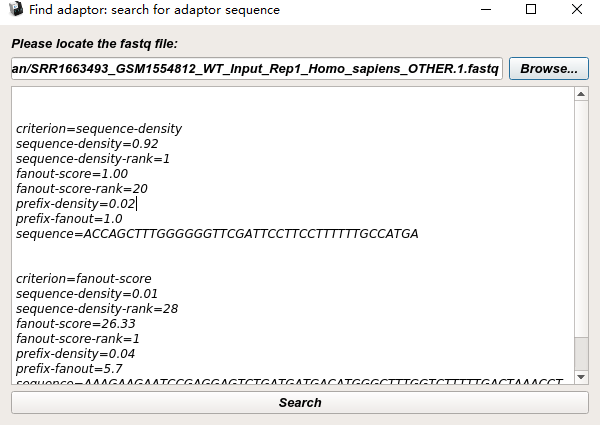
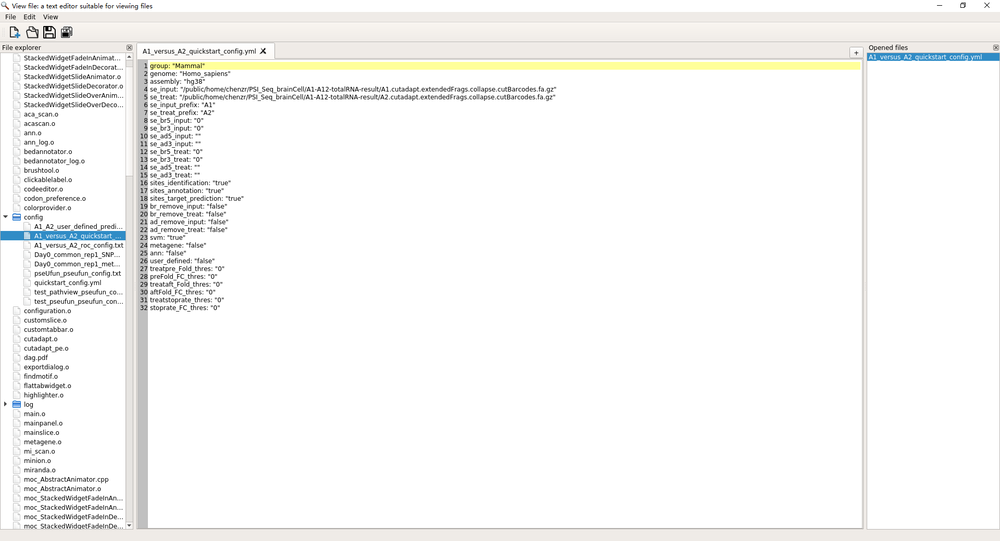
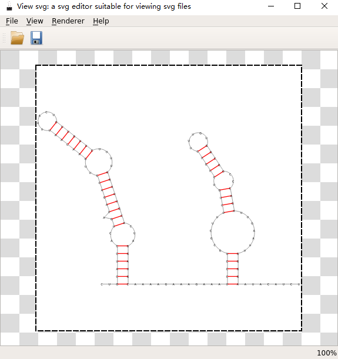

Accessory Tools¶
psiFinder provide multiple accessory tools to help users complete their Ψ-sites data analyses.
Find adaptor¶
View bed¶
View svg¶
Venn diagram¶
Venn diagram facilitates users to generated venn diagram, which is useful for getting overlap Ψ-sites (same extended sequence) from multiple biological replicates (input files with _chroloc.txt sufffix generated by Ψ-sites Annotation).
Note
All user input will be recorded in a plain text file with suffix _venn_diagram.txt in psiFinder/config and help users to easily reload the previous config (by simply clicking CONFIG button).